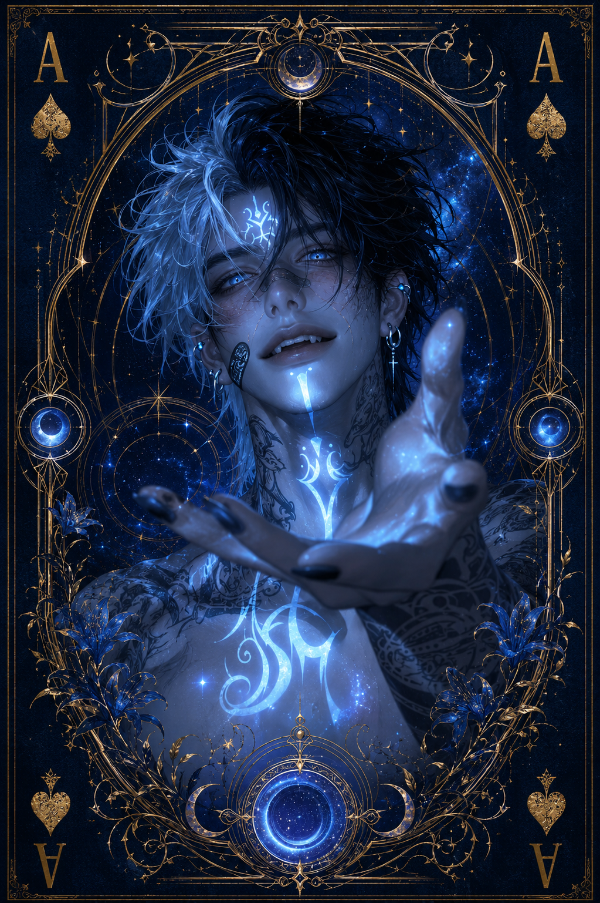

| Race | Triton |
| Gender | Male |
| Age | 247 Years |
| Nation | Nethralis Seas |
| Weapon | Astral Trident |
| Magic | Celestial Tide Magic |
Nereon is a powerful triton who spends most of his time within the deepest regions of the Nethralis Seas. Known as the Star Mage, he possesses an exceptional connection to both the ocean and the celestial forces reflected upon its waters, wielding a rare form of magic that combines the power of the tides with astral energy.
Although usually serious and reserved, Nereon is far from cold. He willingly offers his help to those who seek him out, particularly when their intentions are sincere. When a subject genuinely interests him, his normally quiet demeanor changes completely, revealing an unexpectedly enthusiastic and curious side that few people ever get to see.
Despite possessing an extraordinary level of magical power, Nereon has a relatively low reputation for danger. He rarely seeks confrontation and prefers using his abilities with restraint rather than intimidation. His Astral Trident helps channel his celestial tide magic, giving him remarkable control over the forces surrounding him beneath the sea.
Nereon becomes especially withdrawn whenever he travels onto dry land. Crowded places such as markets make him noticeably more reserved, causing him to observe quietly rather than participate. Beneath this cautious exterior, however, remains an immensely powerful mage whose fascination with the mysteries of the sea and stars can quickly overcome even his usual silence.